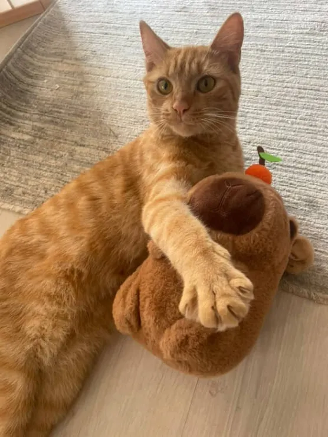

Orange Cat (Sunny)
This is an Sunny. He is a very aggressive cat. Not cuddly at all. Pet him, he attacks you. Look at him, he attacks you. You don't feed him, he attacks you. You breathe, it attacks you. He also had 2 girlfriends
Orange CatThis is an Sunny. He is a very aggressive cat. Not cuddly at all. Pet him, he attacks you. Look at him, he attacks you. You don't feed him, he attacks you. You breathe, it attacks you. He also had 2 girlfriends
Orange Cat
This is an white cat. It's pretty. It is Sunny's ex. Seen it with sunny for 2 months and it dissapeared.
White Cat
This is an tuxedo cat. Very fancy. Sunny's current girlfriend. One time i thought sunny was missing just to find him coming out of a garden with the tuxedo cat.
Tuxedo Cat